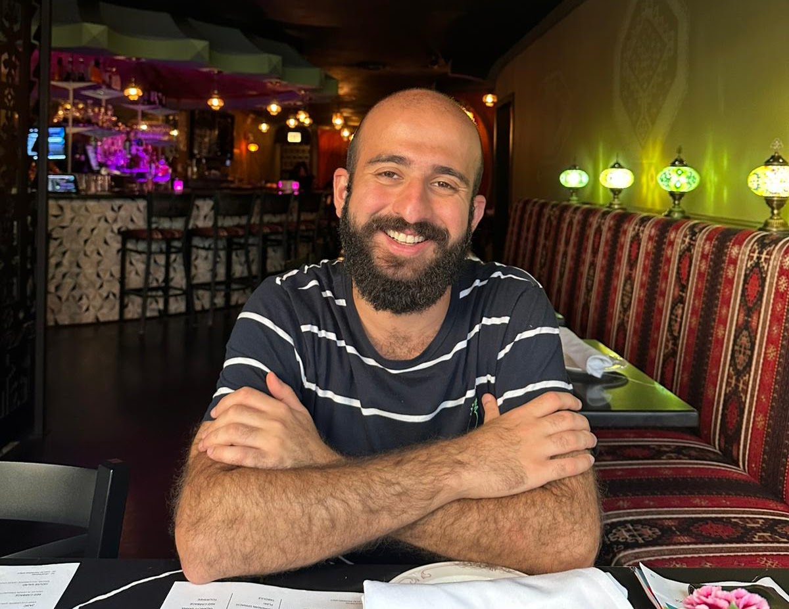

Estepan Ashkarian
Graduate Student in Mathematics, Purdue University
- Department
- Department of Mathematics, Purdue University
- Office
- Math 1027
- Address
- West Lafayette, Indiana
- eashkari@purdue.edu
§1 About
I'm a graduate student in the Department of Mathematics at Purdue University. My interests lie in analysis, partial differential equations and probability theory; the interplay between these three subjects is quite beautiful.
- SPDEs
- Rough Paths
- Probability
- PDEs
Current work
- Applications of rough path theory in reinforcement learning.
- Long-time behavior of solutions of stochastic partial differential equations.
Education
PhD
Purdue University, in progress. Doctoral supervisor: Samy Tindel.
MS, 2022
American University of Beirut (AUB), August 2020 to May 2022. Supervisor: Rafael Andrist. Thesis in several complex variables and complex geometry: Integrable Generators of Lie Algebras of Vector Fields on the Koras–Russell Cubic Threefold.
BS, 2020
Lebanese University, Bachelor of Science in Mathematics.
§2 Research
Preprints
-
Intermittent singular solutions of the stationary 2D Navier–Stokes equations in sharp Sobolev spaces
-
The Pontryagin maximum principle and Q-functions in rough environments
§3 Talks
2026
- Invariant Measures for Stochastic Heat Equations with Dissipative Drift in the Whole SpaceNortheast Probability Seminar, New York University
- Ergodicity for Dissipative Heat Equations in the Whole SpaceSPDEs Workshop, The Ohio State University
- Continuous Time Reinforcement Learning in the Rough SettingSeminar on Stochastic Processes, Union College
2025
- Continuous Time Reinforcement Learning in the Rough SettingSIAM Great Lakes Conference, Illinois Tech
- Continuous Time Reinforcement Learning in the Rough SettingStudent Computation and Applied Mathematics Seminar (SCAM), Purdue University
- Continuous Time Reinforcement Learning in the Rough SettingProbability Seminar, Purdue University
- Integration Theories for Stochastic AnalysisGraduate Student Analysis Seminar, Purdue University
2024
- Learning on Rough Terrain: Optimal Control Meets Reinforcement LearningStudent Colloquium, Purdue University
- Stein's Method for Normal Approximations and ApplicationsStudent Colloquium, Purdue University
2023
- An Elementary Proof of the Strong Law of Large Numbers (due to Etemadi)Student Colloquium, Purdue University
- Sharp Inequalities for Martingales (a result due to Burkholder)Math 539 (Probability II), Purdue University
- The Return of the Initial Configuration, 2100 Timesteps Later…Student Colloquium, Purdue University
2022
- Chacon's Example of a Weakly Mixing System Which Is Not Strongly MixingMath 307 (Ergodic Theory) final project, American University of Beirut
- Integrable Generators of Lie Algebras of Vector Fields on the Koras–Russell Cubic ThreefoldMaster's thesis defense, American University of Beirut
§4 Teaching
Purdue University
- Fall 2026Teaching AssistantMA 519 Introduction to Probability; MA 303 Differential Equations and Partial Differential Equations
- Fall 2025LecturerMA 16010 Applied Calculus I (two sections)
- Spring 2025Directed Reading ProgramGame Theory, with two undergraduate students
- Fall 2024Seminar OrganizerConcentration Inequalities; ten graduate students attended and several presented
- Fall 2023LecturerMA 16010 Applied Calculus I (two sections)
- Summer 2023Recitation InstructorMA 266 Ordinary Differential Equations (one section)
- Spring 2023Recitation InstructorMA 162 Calculus II (two sections)
- Fall 2022Recitation InstructorMA 162 Calculus II (two sections)
American University of Beirut
- Spring 2022Recitation InstructorMath 218 Elementary Linear Algebra (two sections)
- Fall 2021Teaching AssistantMath 261 Number Theory
- Spring 2021Teaching AssistantMath 223 Advanced Calculus
- Fall 2020Teaching AssistantMath 214 Topology
§5 Conferences Attended
- Mar 2026Seminar on Stochastic Processes 2026March 25–28, Union College
- Nov 2025Northeast Probability SeminarNovember 20–21, CUNY
- Sep 2025SIAM Great LakesSeptember 27–28, Illinois Tech
- Aug 2025Frontiers in Stochastic AnalysisAugust 11–13, Purdue University
- Jul 202553rd Saint-Flour Probability Summer SchoolJuly 1–12, Saint-Flour, France
- Mar 2025Seminar on Stochastic Processes 2025March 19–22, Indiana University
- Oct 202445th Midwest Probability ColloquiumOctober 10–12, Northwestern University
- Mar 2024Universality and Integrability in KPZMarch 11–15, Columbia University
- Oct 202344th Midwest Probability ColloquiumOctober 12–14, Northwestern University